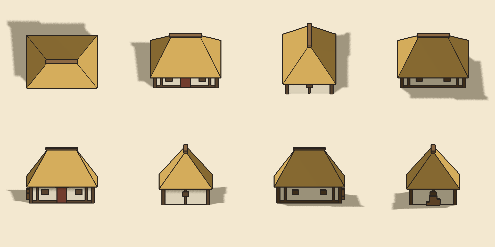

Longhouse cottage-01.glb
Daub walls in a timber frame under a hipped thatch roof; door on the south (+Z) side.
- Footprint
- 8 x 6 m
- Height
- 5.84 m
- Triangles
- 272 of 500
- Source
- generated by assets/src/models/cottage.py; script written by Claude Opus 5.5
- Licence
- self-made
- Used in
- Hamlet: houses (longhouse, daub)
- Verified
- yes, 2026-11-24